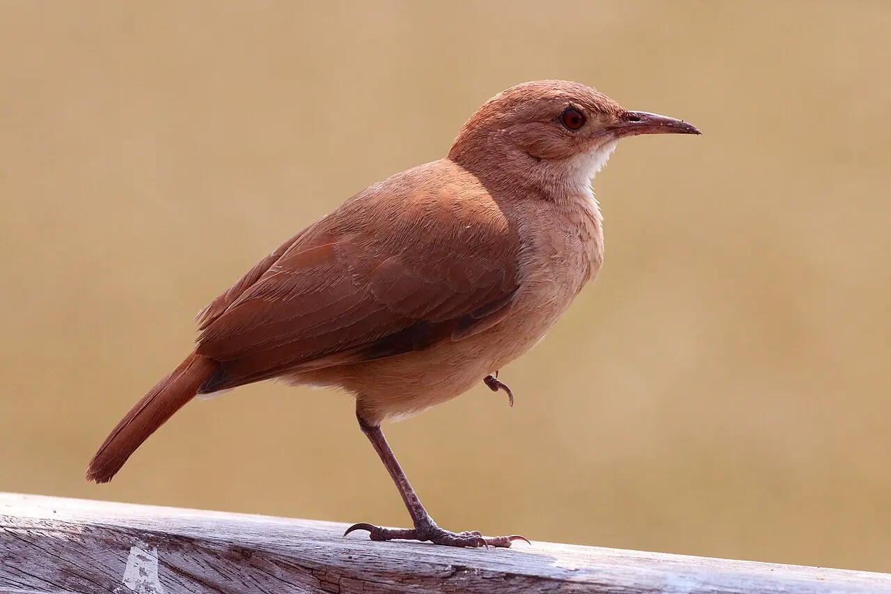
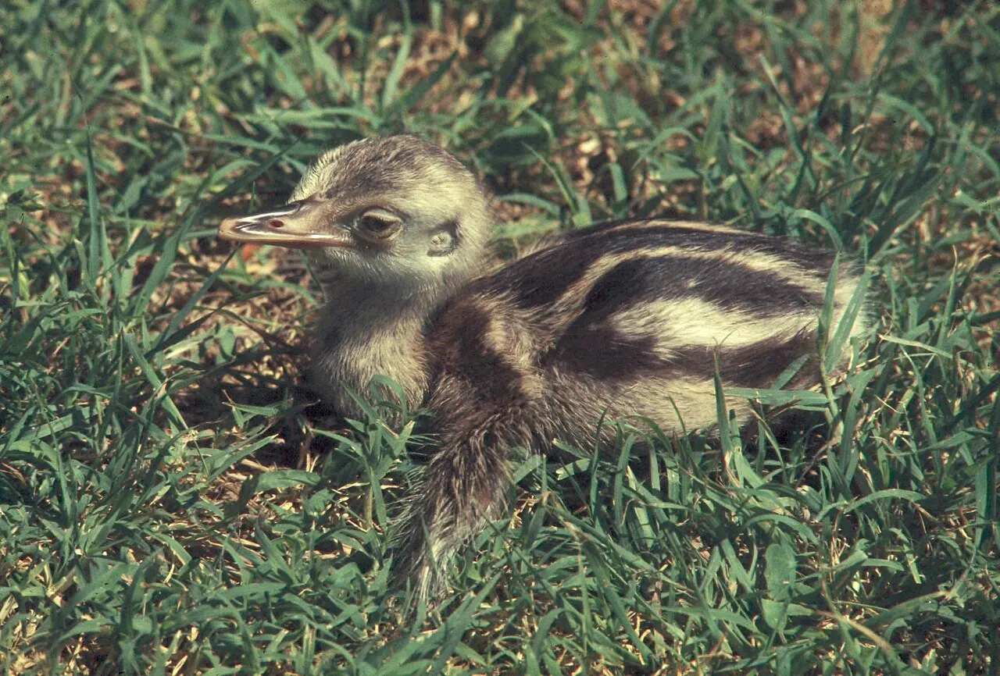
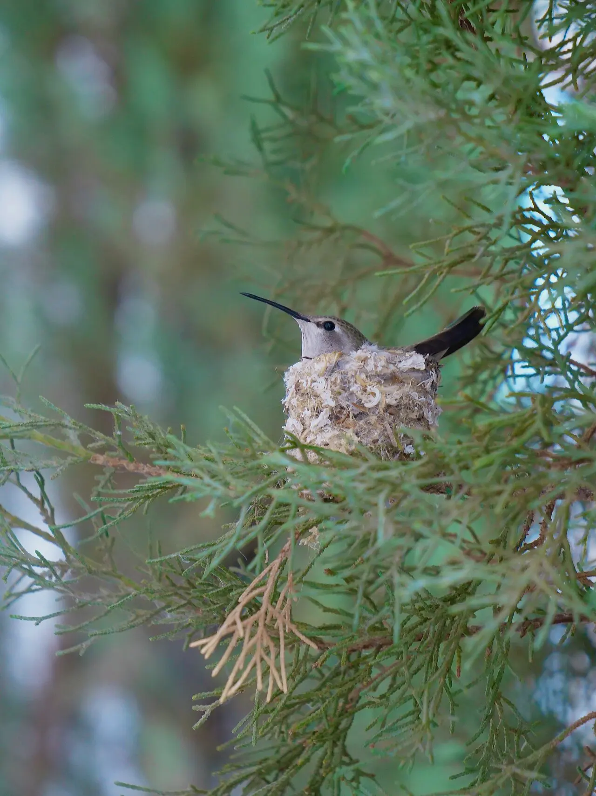
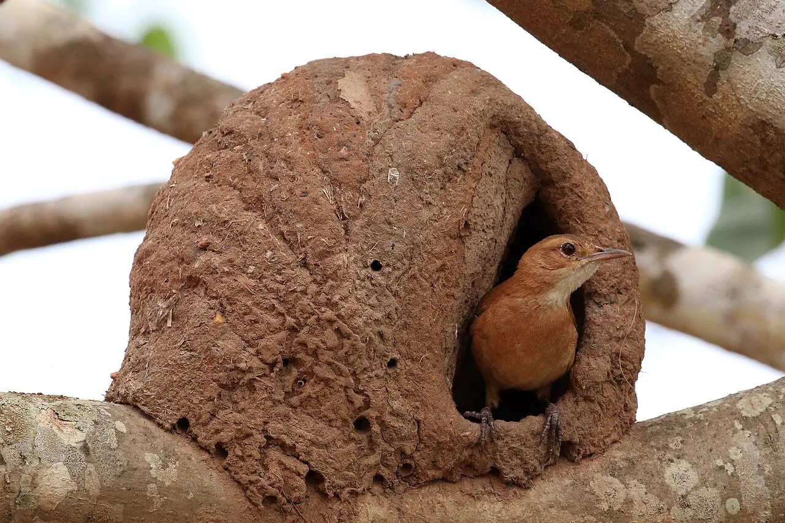
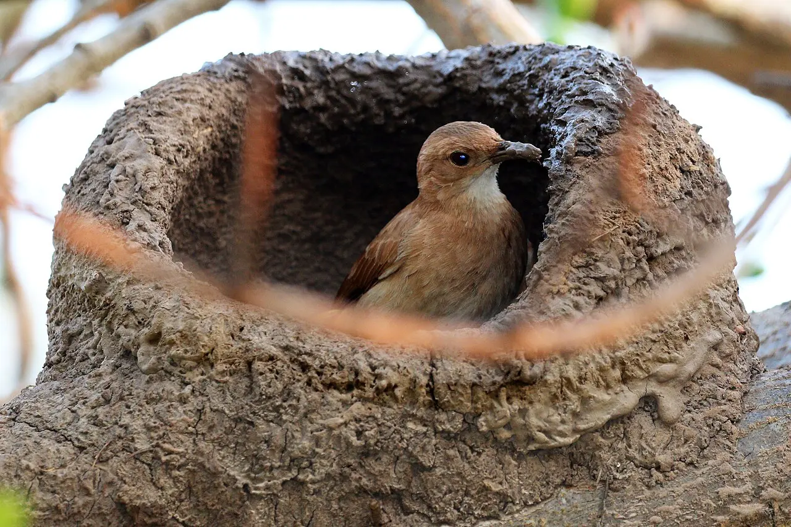

Módulo 2 Aula 10
Ovos e ninhos
Todo o começo de uma ave cabe em um ovo. E cada espécie constrói, ou escolhe, um lugar seguro para ele.
- As partes de um ovo de ave
- A diferença entre filhotes precoces e altriciais
- Como o joão-de-barro constrói o ninho

Ave da aula
João-de-barro Furnarius rufus
O ovo por dentro
O ovo tem tudo o que o filhote precisa para se formar. Do lado de fora: a casca, com membranas logo abaixo[2, 1]. Dentro: a clara, que tem uma parte mais espessa e outra mais fluida, e a gema, no centro[1]. Numa fecundação, a gema fornece os nutrientes e a clara fornece a água para o desenvolvimento do embrião[2]. Duas fitas torcidas de clara, as , mantêm a gema no centro, longe da casca[1]. Depois que o ovo é posto e esfria, forma-se a câmara de ar, na ponta mais larga, entre as duas membranas[3].
Escolha uma parte.
Corte esquemático, sem escala.
Os nomes das partes seguem material de avicultura e de segurança alimentar, que descrevem o ovo de galinha. Em outras aves a proporção entre as partes muda.
Dois tipos de filhote
Quando o ovo choca, o filhote pode nascer em estágios bem diferentes. Filhotes nascem com penugem, veem e logo se movem[4]. Filhotes nascem quase sem penas, de olhos fechados e dependem de cuidado constante[5].

Filhote precoce
Nascem prontos para andar. O da ema, mostrado ao lado, é assim: coberto de penugem, com listras que o disfarçam na grama.
Ema, Rhea americana.

Filhote altricial
Nascem dependentes. Por isso as aves deste tipo constroem um ninho e passam semanas alimentando os filhotes. O ninho do beija-flor, ao lado, é pequeno e em forma de taça.
Um ninho de barro
O joão-de-barro constrói o ninho com barro e restos de plantas[7]. O resultado lembra um forno de barro, com uma abertura por onde a ave entra. Um estudo com mais de 1.200 cidadãos cientistas reuniu dados de mais de 12.600 ninhos em toda a área de vida da espécie: a entrada pode ficar à direita ou à esquerda, e o casal costuma repetir o mesmo lado nos ninhos que faz nos anos seguintes[6]. O motivo dessa escolha ainda não foi explicado por fatores do ambiente[6].


Palavras novas
Teste rápido
Sem nota. Se errar, tente de novo.
O que a gema fornece ao embrião?
Como nascem os filhotes altriciais?
De que material é feito o ninho do joão-de-barro?
Referências e leitura complementar
Onde conferir o que foi dito nesta aula. Os números entre colchetes no texto levam a estas fontes. Os links abrem em outra aba.
- How Does a Hen Make an Egg?eXtension · Small and Backyard Poultry · inglêsPartes do ovo: casca, membranas, clara, gema, chalazas e câmara de ar.
- EggEncyclopaedia Britannica · inglês · leitura complementarEstrutura do ovo de ave: casca, membranas, clara e gema.
- Biology of EggsUSDA · Food Safety and Inspection Service · inglêsEstrutura do ovo: casca, membranas, clara, gema e câmara de ar.
- Precocial youngEncyclopaedia Britannica · inglêsFilhotes que nascem com penugem e já andam ou nadam.
- Altricial stateEncyclopaedia Britannica · inglêsFilhotes que nascem nus e dependentes.
- Citizens reveal that pairs of rufous horneros have specific preferences when it comes to nest buildingMax Planck Institute for Biological Intelligence · inglêsEstudo com ciência cidadã sobre o lado da entrada do ninho do joão-de-barro.
- Rufous Hornero – Furnarius rufusBirds of the World · Cornell Lab of Ornithology · inglês · leitura complementarA espécie do joão-de-barro e o ninho de barro.
Os endereços foram abertos e conferidos em 29/09/2026. Alguns sites de revistas científicas e de órgãos oficiais exigem verificação humana e não puderam ser testados por robô. Sites externos podem mudar ou sair do ar.
Para levar
Em três frases
- Um ovo tem casca, membranas, clara, gema e uma câmara de ar, e a gema traz o alimento do embrião.
- Filhotes precoces nascem cobertos de penugem e já andam; os altriciais nascem nus e dependentes.
- O joão-de-barro constrói um ninho de barro em forma de forno, com a entrada de um dos lados.